Higashiyoshino, Nara: things to do, food and stays
Higashiyoshino · Nara
Higashiyoshino
Highlighted on the Nara map.
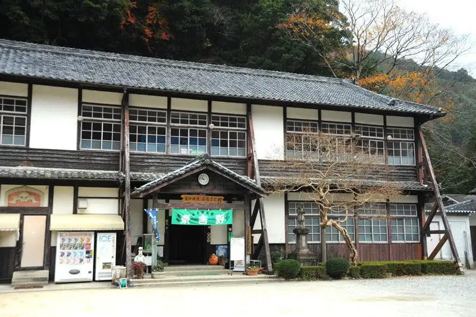
Stay
観光旅館 杉ヶ瀬
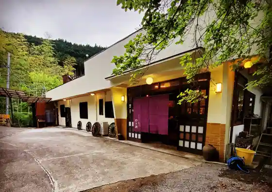
Kanko Ryokan Sugi Ke Se
Ryokan inn in Ogawa, Higashiyoshino with kaiseki dinners and parking.
あまご池 高見山荘
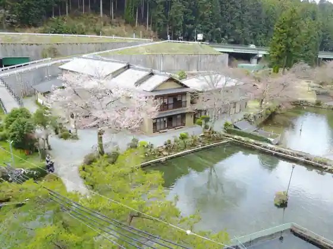
Amago Ike Takami Sanso
Inn in Sugitani, Higashiyoshino with parking.
Dining
きのこの舘
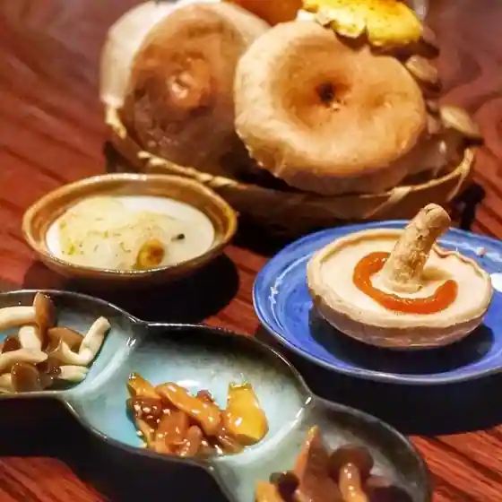
Kinokono Kan
よしの庵
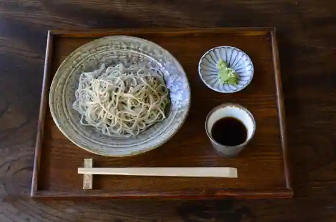
Yoshino Iori
高見の郷 天空茶屋
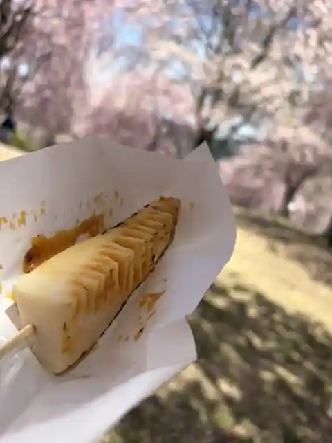
Takami No Sato Tenku Chaya
いちえ
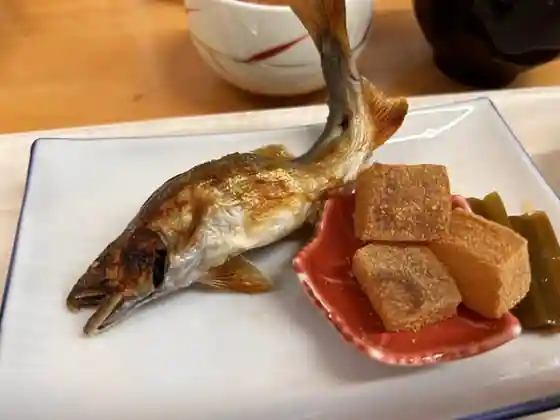
Ichie
リトルオーブン
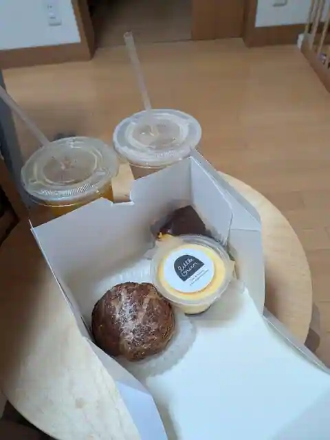
Ritoruobun
天好園
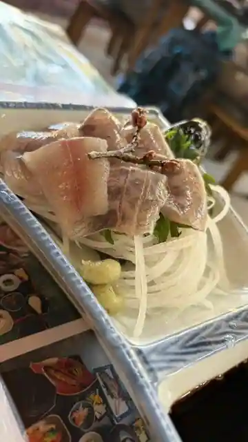
Ko Sono
麦笑
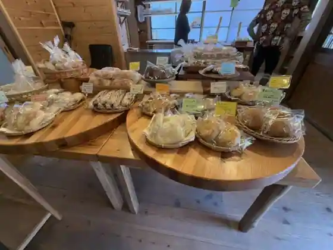
Mugi Warai
レストランあしびき
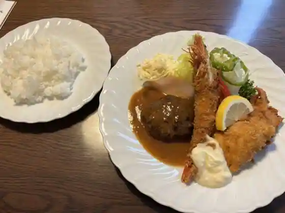
Restaurant Ashibiki
プティットフィーユ
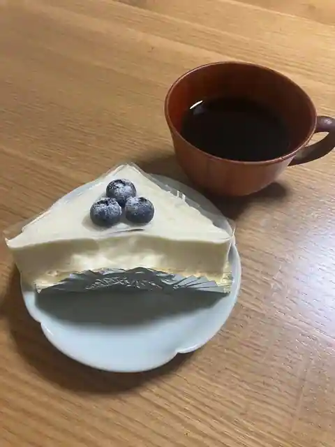
Puteittofiyu
空木
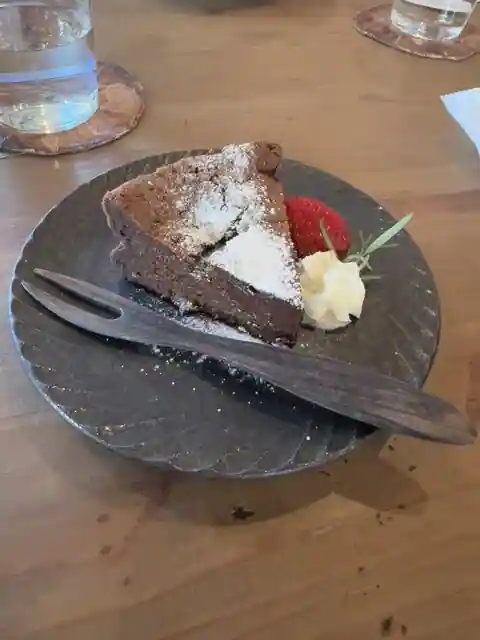
Utsugi
西善 東吉野村本店
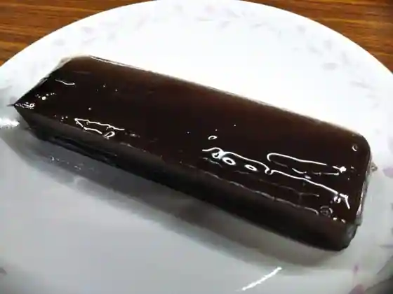
Nishi Zen Higashiyoshino Muramoto
宿とごはんと酒どころ。ひなたや
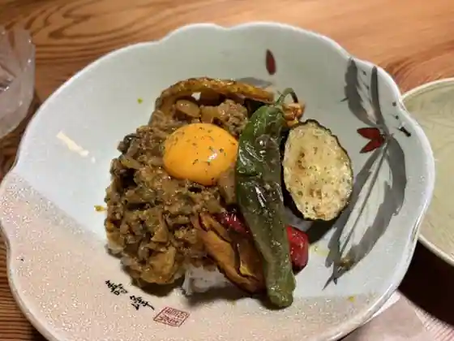
Yadoto Gohanto Sake Dokoro. Hinataya
杉ヶ瀬
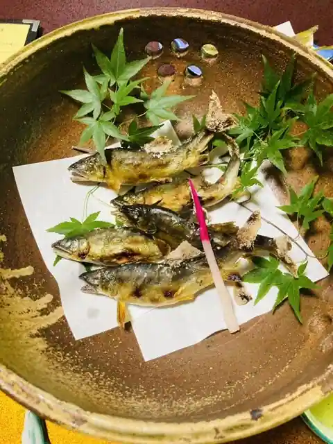
Sugi Ke Se
坂利製麺所 本店
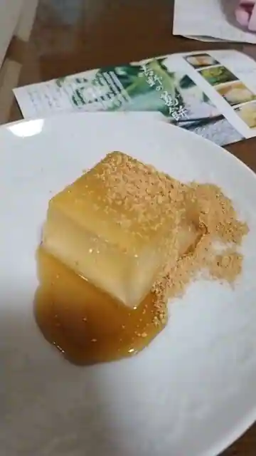
Saka Ri Seimen Tokoro Hon
吉野の源流 やん茶庵
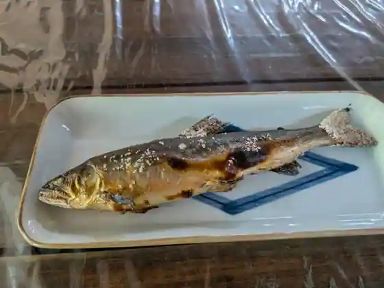
Yoshino No Genryu Yan Cha Iori
グットウルフ麦酒
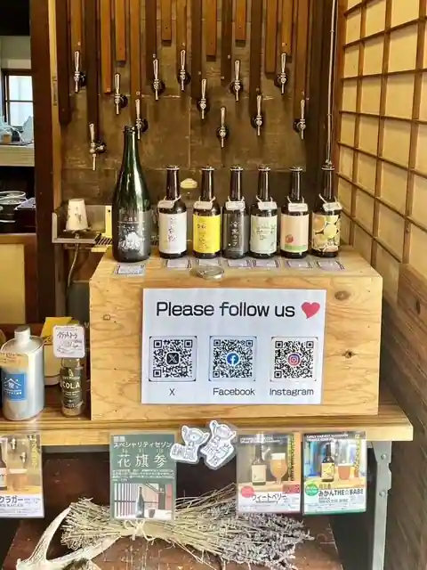
Guttourufu Building
はなゆかり
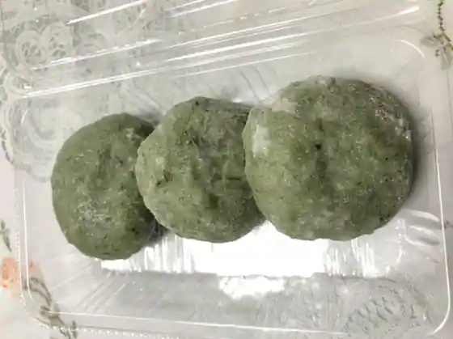
Hanayukari
Higashiyoshino Base K2
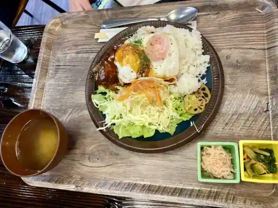
Higashiyoshino Base K2
みつは結び
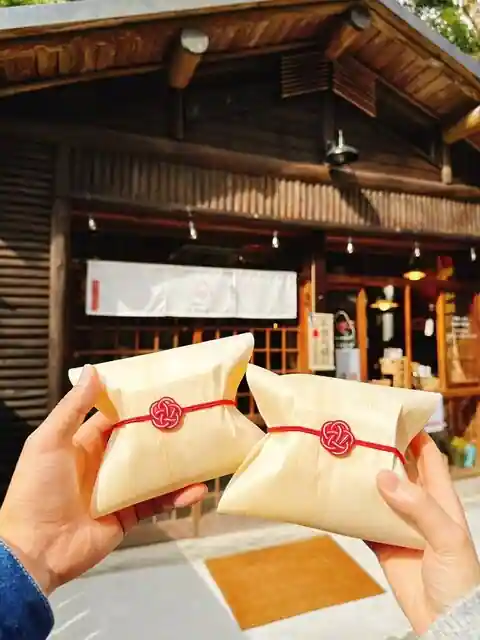
Mitsuha Musubi
龍泉寺
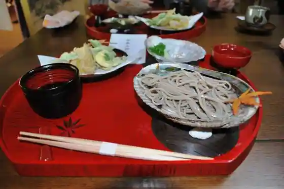
Ryusen Tera
丹生川上神社 参拝者休憩所
Nyukawa Ue Jinja Sanpai Mono Kyukeijo
Sights
Furusato Mura
Nyukawa Ue Shrine (Chusha)
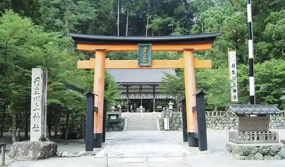
Amaterasu Tera Yakushido

Toseki Falls
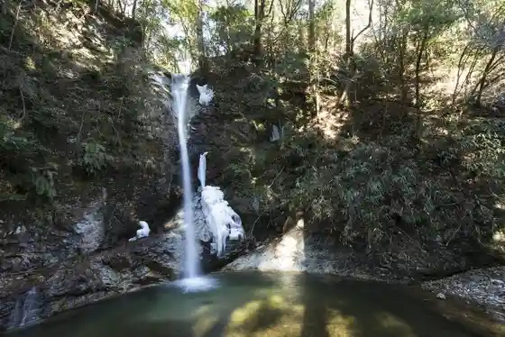
Takami Yama
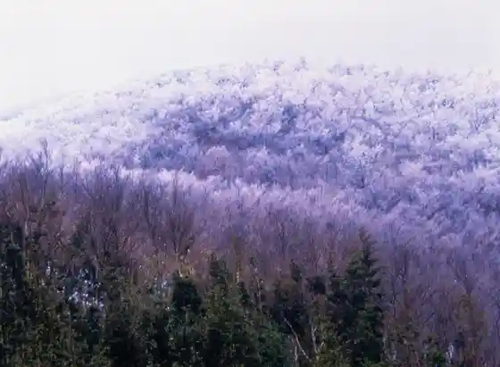
Ryusen Tera (Higashiyoshino)